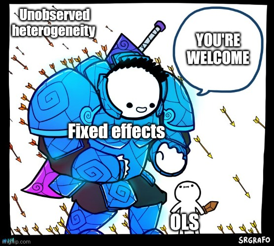

Panel data and Fixed Effects (Many FE)
Are we seeing double?
Re-Cap: Potential outcome Model
In the ideal world, where we can see all possible outcomes and scenarios of your potential treatments, it will be very simple to estimate treatment effects:
\[ \delta_i = Y_i(1)-Y_i(0) \]
Why does this work??
One way to understand this it to imagine that potential outcomes are a function of all observed and unobserved individual characteristics, plust the treatment Status.
\[y_i(D)=y_i(X,u,D) \]
So when comparing a person with himself (clones or parallel worlds), we know (or at least expect) that everything else is the same, except for the Treatment Status.
Differences between the two states are explained only by the treatment!
The Problem and first Solution RCT
We do not observe both States at the same time. People will either be treated or untreated, not both.
So what can we do?
We need to find good counterfactuals!
One way to do so is via RCT, for example using a lottery!
Why does it work?
Potential outcomes will be unrelated to treatment, because treatmet is assigned at random.
Here, it also means that \(X's\) and \(u's\) will be similar across groups (because of random assigment)
But…you cannot estimatate individual effects, but at least estimate aggregate effects (ATE = ATT = ATU)
Other Solutions?
So RCTs can be very expensive, and difficult to implement after the fact. In those situations, however, you can use observed data to try answering the same questions!.
One option? Something we have done before…Regression Analysis!
\[y_i = a_0 + \delta D_i + X_i\beta + e_i\]
The idea is that you directly control for all confounding factors that could be related to \(y_i\) and \(d_i\).
In other words, you add controls until \(D_i\) is exogenous! \(E(e_i|D)=0\)
Implications to the PO model?
Assumes all individuals have the same outcome structure (\(\beta s\)), except for the TE
The treatment is effect is homogenous (no heterogeneity)
and that functional form is correct (for extrapolation)
However, explicitly controlling for covariates, balances characteristics (FWL):
\[ \begin{aligned} D_i &= X\gamma + v_i \\ y_i &= a_0 + \delta v_i + u_i \\ \delta &=\frac{1}{N} \sum \frac{D_i - X\gamma}{var(v_i)} y_i \end{aligned} \]
Treated units will get positive weights, and controls negative weights, with exceptions because of the LPM.
Weights will “balance Samples” to estimate ATE.
Controlling for Unobservables

What if you can See X’s
Some times, you may have situations where some covariates cannot be observed (Z_i): \[ y_i = \delta D_i +X_i \beta + Z_i \gamma + e_i \]
If \(Z_i\) is unrelated to \(D_i\), you are on the clear. If its unrelated to \(Y_i\) you are also ok. But what if that doesn happen?
Then you have a problem!
You no longer can use regression, because the potential outcomes will no longer be independent of the treatment.
you are dooomed!
(when would this happen)
Having access to More Data
Solution?: Say you have access to panel data: Same individuals across time:
\[ y_{it} = \delta D_{it} +X_{it} \beta + Z_{it} \gamma + e_{it} \]
If we can’t measure \(Z_{it}\), and you estimate this using Pool OLS (just simple OLS), you still need the assumption that:
\[E(Z_{it}\gamma + e_{it}|D_it)=0 \]
But that doesnt solve the problem if \(Z_{it}\) is related to \(D_it\).
One option, in cases like this, is assuming that individual unobservables are fixed across time:
\[ y_{it} = \delta D_{it} +X_{it} \beta + Z_{i} \gamma + e_{it} \]
in which case, it may be possible to estimate Treatment effects
Fixed Effects
With panel data and assuming unobservables are fixed across time, estimating TE is “Easy”. Just add Dummies for each individual!
\[ y_{it}= \delta D_{it} +X_{it} \beta + \sum d_i \gamma_i + e_{it} \]
Here \(d_i \gamma_i\) is our proxy for ALL unobserved factors. OLS can be used to estimate ATEs
This happens because we can estimate potential outcome under the same assumptions as before.
you could, in fact, consider adding fixed effects for all dimensions you consider important to account for:
City, school, region, age, industry, etc
The only limitation…how many dummies can your computer handle? What happens internally?
Fixed Effects: Estimation - The variation within
The obvious approach is using dummies. But that can take you only so far (why?), and may create other problems! (excluded variables)
The alternative is using the within estimator. Say we take the means across individuals, and use that to substract information from the original regression:
\[ \begin{aligned} y_{it} &= \delta D_{it} +X_{it} \beta + Z_{i} \gamma + e_{it} \\ \bar y_i &= \delta \bar D_i + \bar X_i \beta + Z_{i} \gamma + \bar e_i \\ y_{it}-\bar y_i = \tilde y_{it} &=\delta \tilde D_{it} + \tilde X_{it}\beta+\tilde e_{it} \end{aligned} \]
Last equation is easier to estimate (no dummies!) however you need within variation. IF unobserved factors are fixed, they will be “absorbed”.
Also, the SE will have to be adjusted for degrees of freedom. (but nothing else)
This is nothing else but the use of FWL and regression on residuals.
Dont Forget Random Effects
This approach is more efficient than Fixed effects because you don’t estimate fixed effects, just the distribution.
So how does this affect the estimation:
- Errors have two components. One time fixed \(e_i\), and one time variant \(u_{it}\). Then total errors will be correlated with themselves across time \[corr(v_{it}, v_{is}) = corr(e_i+u_{it}, e_i+u_{is}) = \sigma^2_e \]
- Apply FGLS to eliminating this source of auto-correlation! \[y_{it}-\lambda \bar y_i = (X_{it}-\lambda \bar X_it) + v_{it}\]
But, you need the assumption that unobservables \(e_i\) are unrelated to \(X's\). (because we are not directly controlling for them).
The advantage, however, is that you do no need within variation!
FE vs RE
So there are two ways to Analyze data Panel data.
- FE: Uses only within variation, is more consistent, but less efficient (too many dummies)
- RE: Uses all variation in data, is less consistent (stronger assumptions), but more efficient!
How to choose?
The Standard approach is to apply a Hausan Test:
H0:\(\beta^{FE} = \beta^{RE}\) using Chi2
If they are not different (H0 cannot be rejected), then choose RE (efficient). If they are different then choose FE (consistent)
More Fixed effects: TWFE - NWFE?
With multiple sets of fixed effects (individual, time, cohort, region, etc), you can still use dummies to add them to the model.
But, you can apply something similar to the previous approach:
\[ \begin{aligned} y_{it} &= \delta D_{it}+x_{it}\beta + \gamma_i + \gamma_t + e_{it} \\ \bar y_i &= \bar D_i +\bar x_{i}\beta + \gamma_i + E(\gamma_t|i) + \bar e_i \\ \bar y_t &= \bar D_t +\bar x_{t}\beta + E(\gamma_i|t) + \gamma_t + \bar e_t \\ \bar y &= \bar D +\bar x\beta + E(\gamma_i) + E(\gamma_t)+ \bar e \\ \tilde y_{it} &= y_{it}-\bar y_i - \bar y_t + \bar y \end{aligned} \]
So one can estimate the following:
\[ \tilde y_{it} = \delta \tilde D_{it} + \tilde X_{it} \beta + \tilde e_{it} \]
This eliminates FE for both time and individual (if panel is balanced)
Second Option:
Alternatively, you can just run regressions of residuals:
\[ w_{it} = \gamma^w_i+\gamma^w_t+rw_{it} \]
and make regressions using the residuals. (Demeaning also works, but its an iterative process)
Stata Example
#delimit;
frause school93_98, clear;
xtset schid year;
qui:reg math4 lunch lenrol lrexpp ; est sto m1;
qui:xtreg math4 lunch lenrol lrexpp ; est sto m2;
qui:xtreg math4 lunch lenrol lrexpp, fe ; est sto m3;
qui:reghdfe math4 lunch lenrol lrexpp, abs(schid) ; est sto m4;
qui:reghdfe math4 lunch lenrol lrexpp, abs(schid year); est sto m5;
esttab m1 m2 m3 m4 m5, mtitle(ols re fe refe1 refe2) compress se b(3);
hausman m3 m2;
Panel variable: schid (strongly balanced)
Time variable: year, 1993 to 1998
Delta: 1 unit
---------------------------------------------------------------------------
(1) (2) (3) (4) (5)
ols re fe refe1 refe2
---------------------------------------------------------------------------
lunch -0.413*** -0.370*** 0.057 0.057 -0.062*
(0.007) (0.011) (0.031) (0.031) (0.026)
lenrol -0.121 0.936 8.766*** 8.766*** 0.297
(0.425) (0.616) (1.704) (1.704) (1.468)
lrexpp 28.887*** 39.161*** 46.450*** 46.450*** 2.799*
(0.860) (0.878) (1.006) (1.006) (1.265)
_cons -162.292*** -254.864*** -377.338*** -377.423*** 37.398*
(7.960) (8.681) (14.913) (14.918) (15.847)
---------------------------------------------------------------------------
N 9369 9369 9369 9328 9328
---------------------------------------------------------------------------
Standard errors in parentheses
* p<0.05, ** p<0.01, *** p<0.001
---- Coefficients ----
| (b) (B) (b-B) sqrt(diag(V_b-V_B))
| m3 m2 Difference Std. err.
-------------+----------------------------------------------------------------
lunch | .056932 -.3703211 .4272531 .0287753
lenrol | 8.766051 .9357725 7.830279 1.588902
lrexpp | 46.44966 39.16107 7.288595 .4915896
------------------------------------------------------------------------------
b = Consistent under H0 and Ha; obtained from xtreg.
B = Inconsistent under Ha, efficient under H0; obtained from xtreg.
Test of H0: Difference in coefficients not systematic
chi2(3) = (b-B)'[(V_b-V_B)^(-1)](b-B)
= 627.26
Prob > chi2 = 0.0000CRE
Lets add Equation 1 to our main equation. \[ y_i = \beta X_{it} + \theta Z_{i} + \bar X_i \gamma + r_i + e_{it} \]
This equation can now be estimated using RE, because it already allows controls for the correlation of unobserved factors and the individual effects.
You can also estimate the model using pool OLS, clustering errors at individual level.
Result:
- you now have a model that allows for time variant and time fixed components, that is consistent as FE (same coefficients).
Uses:
- Simpler way to test for FE vs RE (are the \(\gamma 's\) significant?)
- there is no need for within variation for any variable! (just overall variation)
cre in Stata
#delimit cr
frause school93_98, clear
reghdfe math4 lunch lenrol lrexpp, abs(schid year) cluster(schid)
** Experimental
cre, abs(schid year): reg math4 lunch lenrol lrexpp, cluster(schid)(dropped 41 singleton observations)
(MWFE estimator converged in 5 iterations)
HDFE Linear regression Number of obs = 9,328
Absorbing 2 HDFE groups F( 3, 1734) = 2.59
Statistics robust to heteroskedasticity Prob > F = 0.0515
R-squared = 0.7548
Adj R-squared = 0.6985
Within R-sq. = 0.0014
Number of clusters (schid) = 1,735 Root MSE = 11.5747
(Std. err. adjusted for 1,735 clusters in schid)
------------------------------------------------------------------------------
| Robust
math4 | Coefficient std. err. t P>|t| [95% conf. interval]
-------------+----------------------------------------------------------------
lunch | -.0620863 .0324188 -1.92 0.056 -.1256705 .0014978
lenrol | .2966956 1.484868 0.20 0.842 -2.615625 3.209017
lrexpp | 2.798777 1.410581 1.98 0.047 .0321579 5.565397
_cons | 37.39798 16.8327 2.22 0.026 4.383449 70.4125
------------------------------------------------------------------------------
Absorbed degrees of freedom:
-----------------------------------------------------+
Absorbed FE | Categories - Redundant = Num. Coefs |
-------------+---------------------------------------|
schid | 1735 1735 0 *|
year | 6 0 6 |
-----------------------------------------------------+
* = FE nested within cluster; treated as redundant for DoF computation
Variable | Obs Mean Std. dev. Min Max
-------------+---------------------------------------------------------
_reghdfe_r~d | 9,328 3.88e-17 .1015168 -1.180599 1.214313
Linear regression Number of obs = 9,328
F(9, 1734) = 821.90
Prob > F = 0.0000
R-squared = 0.4595
Root MSE = 15.505
(Std. err. adjusted for 1,735 clusters in schid)
------------------------------------------------------------------------------
| Robust
math4 | Coefficient std. err. t P>|t| [95% conf. interval]
-------------+----------------------------------------------------------------
lunch | -.0620863 .0327488 -1.90 0.058 -.1263177 .002145
lenrol | .2966948 1.509296 0.20 0.844 -2.663538 3.256927
lrexpp | 2.798777 1.435068 1.95 0.051 -.0158696 5.613423
m1_lunch | -.3799049 .0343728 -11.05 0.000 -.4473213 -.3124884
m2_lunch | -2.750266 .5058811 -5.44 0.000 -3.742467 -1.758065
m1_lenrol | -2.394415 1.633657 -1.47 0.143 -5.598561 .809731
m2_lenrol | -273.8924 11.25589 -24.33 0.000 -295.9689 -251.8158
m1_lrexpp | 5.667779 2.276245 2.49 0.013 1.203305 10.13225
m2_lrexpp | 73.4047 3.276595 22.40 0.000 66.9782 79.83119
_cons | 37.39799 17.10933 2.19 0.029 3.840901 70.95507
------------------------------------------------------------------------------Caveats: Not everything is solved using FE
While FE allows you do control for unobserve but time fixed factors, it will Not help you if those factors are time varying.
if \(e_{it}\) is different across treated and control groups \(D_{it}=0,1\) then TE cannot be estimated.
This could happen if cases of reverse causality or
Because it depends strongly on within variation, it will be more sensitive to measurement errors. Specifically:
\[\beta^{fe} = \beta * \left(1-\frac{\sigma_v^2}{(\sigma^2_v+\sigma^2_x)(1-\rho_x)}\right) \]
In other words. when \(X\) has strong autocorrelation (Stable treatment), the measurement error effect is far larger!
Caveats: FE makes things harder to analyze
When using a single FE, OLS using within variation to identify the slope coefficients. How does a change in X’s (compared to the average) affect changes in the outcomes (respect to averages)
When using Two Fixed effects (individuals and time) identification becomes tricky: \[\tilde y_{it} = y_{it}-\bar y_i - \bar y_t + \bar y \]
We are looking for variation across time but also across individuals.
we are using changes in outcome that are different from the average changes in the sample.
- with Multiple FE, same story…we are trying to exploit variation across multiple dimensions! Difficult to understand
Caveats: Some times, the variation may be wrong:
Consider:
\[y_{it} = a_i + a_t + \delta D_{it} + e_{it}\]
If \(D_it\) changes only for some people at the same time, we are good.
- The variation comes from comparing individuals (before and after) (time variation), who were treated and untreated (individual effects)
But if \(D_{it}\) changes at different times for different people, we have a problem.
- Who is being compared???
- Those before and after (fine) to those with Status change (D=0 -> D=1) to those whos status do not change! (D=0 to D=0) or (D=1 to D=1)
We will discuss this problem again when talking about DID
Income, Schooling, and Ability:
Evidence from a New Sample of Identical Twins
by
Orley Ashenfelter and Cecilia Rouse
Motivation:
In search of Returns to Education
This paper aims to identify returns of education abstracting from the impact of innate ability.
In their framework, ability is mostly explained by genetics, thus to control for it, the authors use a sample of identical twins, to “absorb” unobserved genetics using FE.
They address some of the problems inherited to FE estimation
The model
- The theoretical model described states that all individuals have an optimal level of Schooling, such that maximizes the his/her returns.
- However, Total schooling may be affected by measurement or optimization errors.
- Schooling will be directly affected by returns to education, but also by the ability of students.
In their framework, for the twins setup, (log)earnings will be determined by:
\[ \begin{aligned} y_{1j}=A_j + b_j S_{1j} + \gamma X_j + e_{1j} \\ y_{2j}=A_j + b_j S_{2j} + \gamma X_j + e_{2j} \end{aligned} \]
The model
Because ability is related to schooling, they suggest using the following:
\[ y_{ij}=\lambda(0.5(S_{1j}+S_{2j}) + b_j S_{1j} + \gamma X_j + v_j+ e_{ij} \]
Which is the equivalent to CRE. Or estimate the fixed effects equivalent:
\[y_{1j} - y_{2j} = b(S_{2j}-S_{1j}) + e_{2j} - e_{2j} \]
The later is a First difference, rather than FE estimator, but they both identical when T=2.
- An additional model the authors use is one where returns to education could be related to ability.
- Or where ability is measured/proxied by parents education. (which is fixed across twins)
Data

OLS

FE-RE-CRE?

Heterogeneity